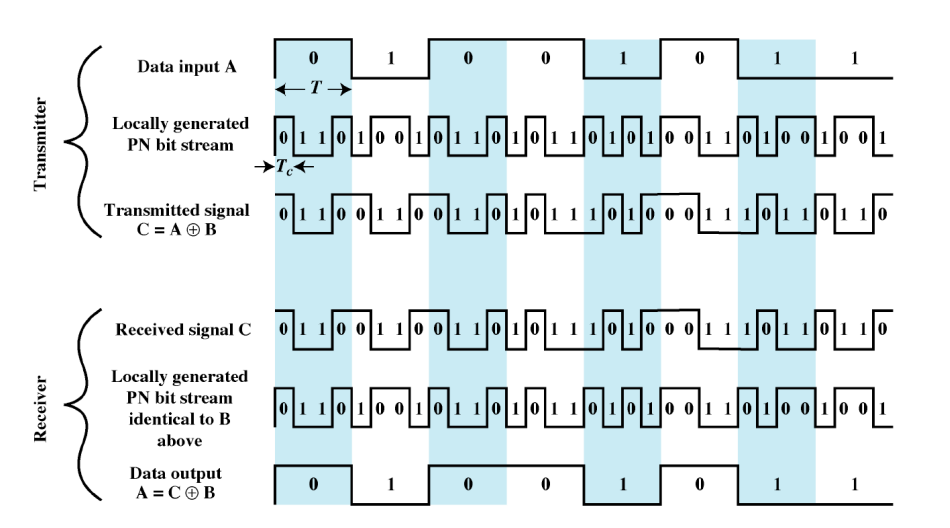
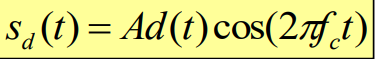
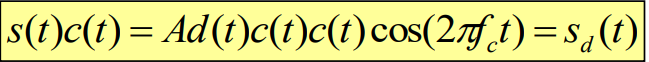
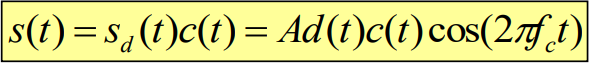
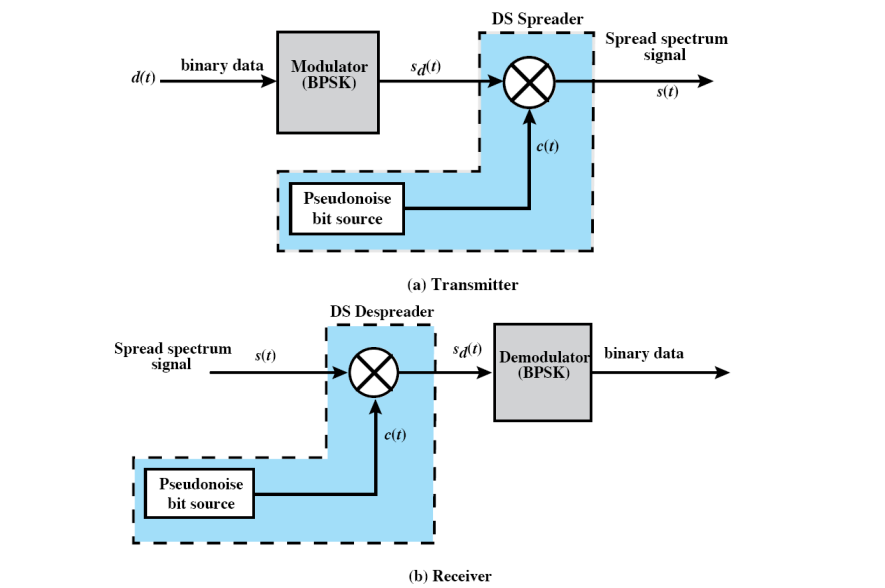
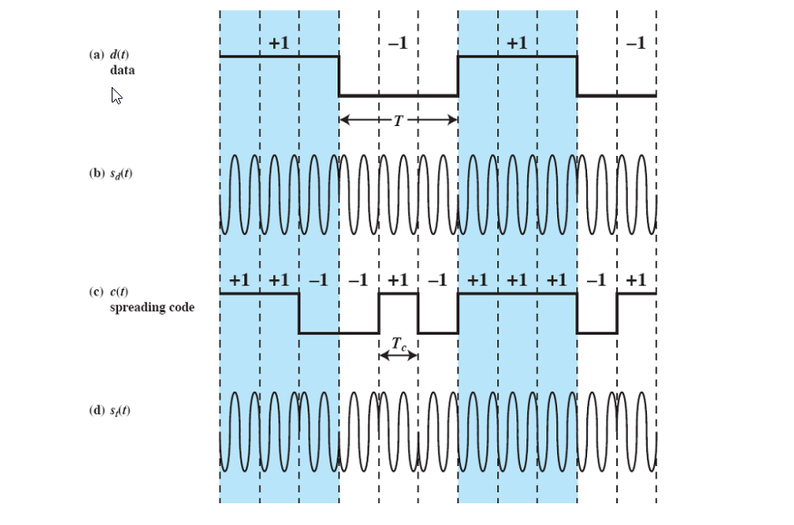

Theory
Direct Sequence Spread Spectrum (DSSS)
In Telecommunication, direct-sequence spread spectrum (DSSS) is a spread spectrum modulation technique used for digital signal transmission over airwaves. It was originally developed for military use, and employed difficult-to-detect wideband signals to resist jamming attempts. It is also being developed for commercial purposes in local and wireless networks.
The stream of information in DSSS is divided into small pieces, each associated with a frequency channel across spectrums. Data signals at transmission points are combined with a higher data rate bit sequence, which divides data based on a spreading ratio. The chipping code in a DSSS is a redundant bit pattern associated with each bit transmitted. This helps to increase the signal's resistance to interference. If any bits are damaged during transmission, the original data can be recovered due to the redundancy of transmission.
The entire process is performed by multiplying a radio frequency carrier and a pseudo-noise (PN) digital signal. The PN code is modulated onto an information signal using several modulation techniques such as quadrature phase-shift keying (QPSK), binary phase-shift keying (BPSK), etc. A doubly-balanced mixer then multiplies the PN modulated information signal and the RF carrier. Thus, the TF signal is replaced with a bandwidth signal that has a spectral equivalent of the noise signal. The demodulation process mixes or multiplies the PN modulated carrier wave with the incoming RF signal. The result produced is a signal with a maximum value when two signals are correlated. Such a signal is then sent to a BPSK demodulator. Although these signals appear to be noisy in the frequency domain, bandwidth provided by the PN code permits the signal power to drop below the noise threshold without any loss of information.
- each bit is represented by multiple bits using a
spreading code
- this spreads signal across a wider frequency band
- frequency band of signal is proportional to number of bits
- 10-bit spreading code -> spreads the signal across
the frequency band 10 times greater than a 1-bit
spreading code
- Input is combined with spread code using XOR
- input 0: spreading code unchanged
- input 1: spreading code inverted
Direct Sequence Spread Spectrum Example

- The BPSK signal is represented as:

where,
A = amplitude of signal
f c = carrier frequency
d(t) = discrete function that takes on the value of +1 for one bit time
if the corresponding bit in the bit stream is 1 and the value -1
for one bit if the corresponding bit in the bit stream is 0
-
To produce the DSSS signal, we multiply d(t) by c(t), which is the PN sequence
taking on values of +1 and -1:

-
At the receive, the incoming signal is multiplied again by c(t), but c(t)×c(t)=1 and
therefore, the original signal is recovered:

DSSS Benefits
- Resistance to unintended or intended jamming
- Sharing of a single channel among multiple users
- Reduced signal/background-noise level hampers interception
- Determination of relative timing between transmitter and receiver
Direct Sequence Spread Spectrum System

Direct Sequence Spread Spectrum Features
- DSSS phase-shifts a sine wave pseudorandomly with a continuous string of chips, each of which has a much shorter duration than an information bit. That is, each information bit is modulated by a sequence of much faster chips. Therefore, the chip rate is much higher than the information bit rate.
- DSSS uses a signal structure in which the spreading sequence produced by the transmitter is already known by the receiver. The receiver can then use the same spreading sequence to counteract its effect on the received signal in order to reconstruct the information signal.
DSSS Example Using BPSK

Direct sequence spread spectrum applications
DSSS is used in a number of areas where its properties have enabled it to provide some unique advantages over other techniques.
-
Covert communications: DSSS was first used to provide secure and covert communications. The signals were initially difficult to detect as they sounded like broadband noise and often would have been mistaken for that. Also to access the data it is necessary to know the code used to generate the signal
-
CDMA cellphone technology: The DSSS technique was used to provide a multiple access scheme that was used for 3G cellophane technology. Each mobile used a different access code or spreading code and this enabled multiple users to access the base station on the same frequency.
-
GNSS: Satellite based navigation systems use DSSS as this gives a signal gain by spreading the signal out over a wide bandwidth. It also enables different satellites to use the same channel without mutual interference.